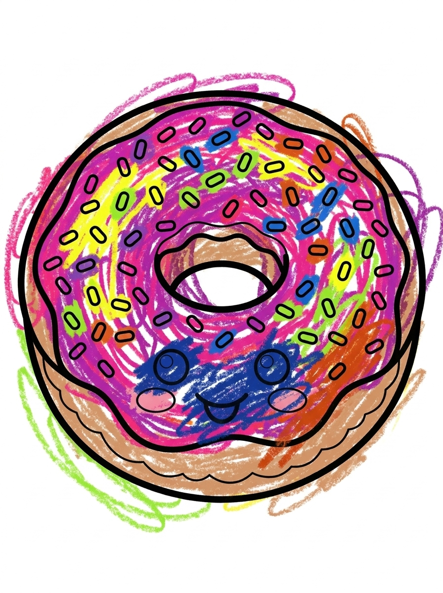
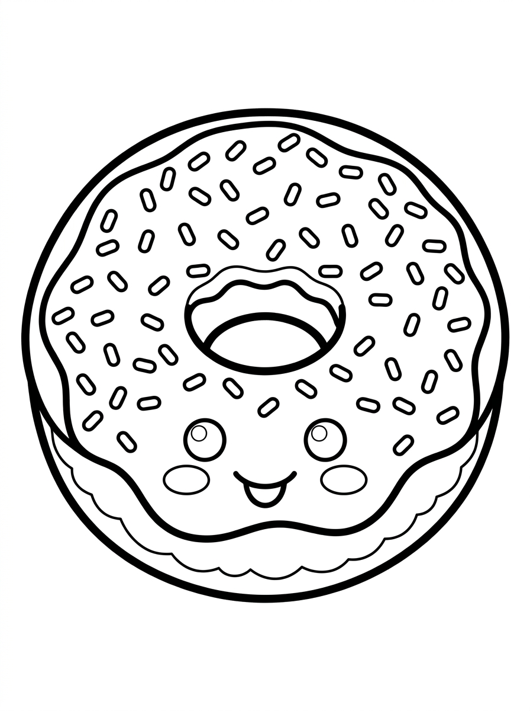
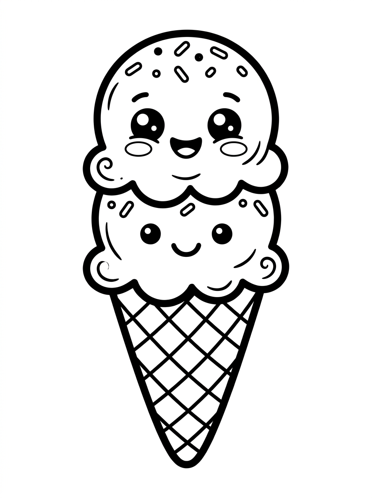
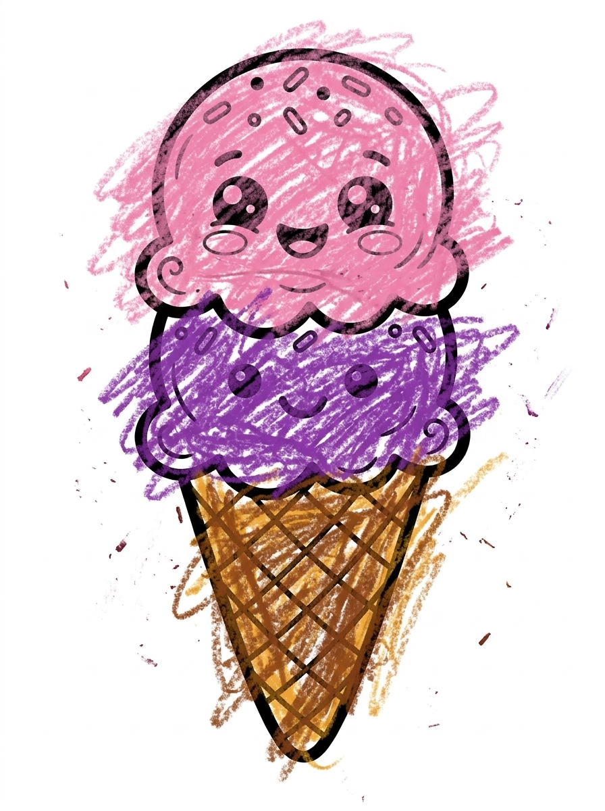
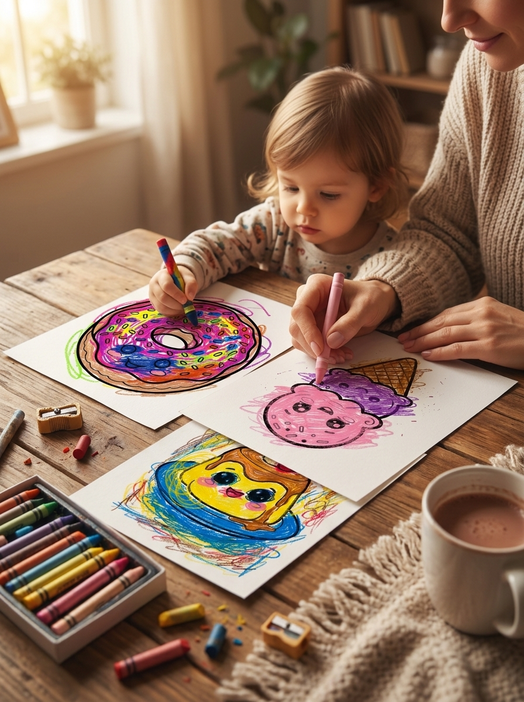

30+ sweet treats
Discover cute donuts, cupcakes, ice cream, candy, and more.
Cupcakes, donuts, ice cream, and more are waiting for every bright idea. Little artists get to make every treat their own.


There are no rules in this cheerful dessert world. Rainbow donuts, purple ice cream, and bright sprinkles are all part of the fun.
Discover cute donuts, cupcakes, ice cream, candy, and more.
Simple, easy-to-see shapes give little artists room to explore.
Enjoy every page with crayons, markers, or colored pencils.

BeforeSprinkles, frosting, and a friendly face leave lots of room for colorful ideas.

Before
AfterPink, purple, or every color at once: this treat is ready for imagination.

Color together at the table, talk about favorite desserts, and let every page become a small creative moment to share.
Akuta Mitora is a Japanese theater director, artist, and creator. For more than two decades, he has created worlds that bring people together. Guided by the belief that books help children grow, he created the Bold and Easy series: a cheerful, screen-free place where little artists can slow down, use their hands, and make every page their own.
Bring home a bright, simple dessert world for your little artist to color.
View on Amazon